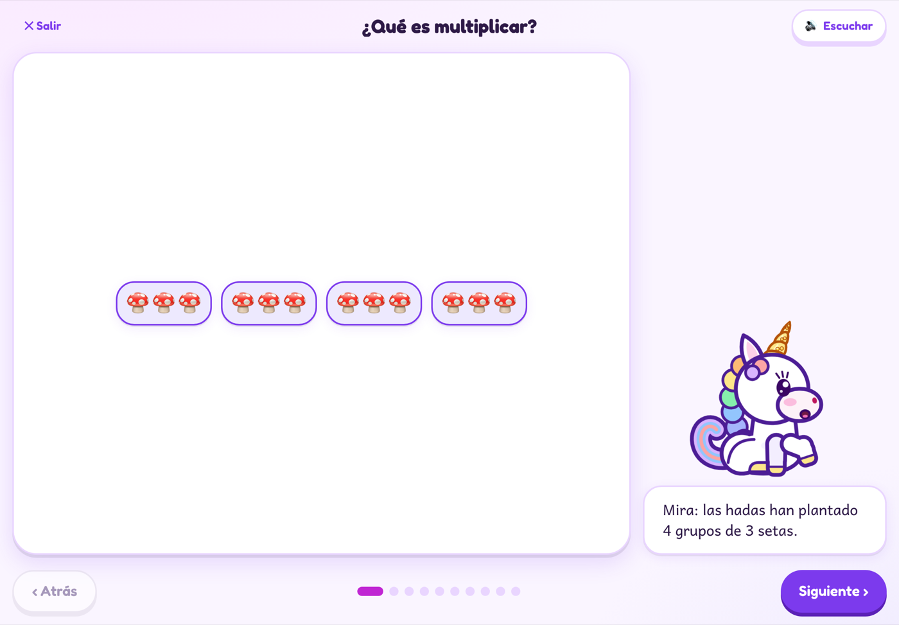

Niños de 7 a 9 años
- Eligen su compañero animal y le ponen nombre.
- Avanzan mundo a mundo, con un cristal por mundo.
 Repasitos
Repasitos
Repasitos ayuda a los niños a practicar las tablas, las sumas, las restas, las multiplicaciones y las divisiones. Cada niño elige un compañero animal y lo rescata en ocho mundos.
¿Ya tienes cuenta? Iniciar sesión

Una app de repaso para casa y para el aula, en tablet, móvil u ordenador. El niño practica a su ritmo; la familia o el colegio ven qué domina y qué toca repasar. Escribe las respuestas con el lápiz, el dedo o el teclado.
Gato, perro, zorro, conejo, panda, pingüino, dragón o unicornio bebé.
Cada mundo tiene un guardián y una prueba. Si su compañero se mete en un lío, lo rescata con la respuesta.
El «Repaso del día» reúne lo que todavía cuesta. Con los ocho cristales, se abre el Gran Cofre.


No hay anuncios en la app, ni compras dentro del juego para los niños.
Desde la zona de adultos, exportas o borras los datos de tu hijo cuando quieras.
Todo se queda en este dispositivo. Creas la cuenta cuando te interese.
Tablas, sumas, restas, multiplicaciones y divisiones.
Crea una cuenta para guardar una copia segura, o prueba sin cuenta en este dispositivo.